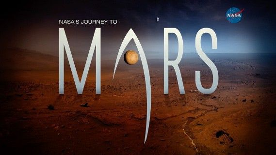

| Mission Name | Type | Objectives | Launch Date | Landing Date | Key Discoveries/Goals |
|---|---|---|---|---|---|
| Viking 1 | Lander | Search for signs of life, map surface, and study atmosphere. | August 20, 1975 | July 20, 1976 | First successful landing on Mars; captured high-resolution images and soil samples. |
| Viking 2 | Lander | Search for signs of life, study surface composition and atmosphere. | September 9, 1975 | September 3, 1976 | Studied Martian geology and atmosphere; found no evidence of life. |
| Opportunity | Rover | Examine Martian rocks, minerals, and soil; assess past water activity. | July 7, 2003 | January 25, 2004 | Found evidence of past water, discovered "Blueberries" (spherical mineral formations). |
| Spirit | Rover | Examine Mars' surface for evidence of past water. | June 10, 2003 | January 4, 2004 | Discovered evidence of ancient volcanic activity, soil analysis revealed past water interaction. |
| Curiosity | Rover | Investigate Mars' climate, geology, and potential habitability. | November 26, 2011 | August 6, 2012 | Confirmed presence of ancient water, discovered organic molecules, and methane spikes. |
| Perseverance | Rover | Search for signs of ancient life, collect samples for future return missions, and test new technologies. | July 30, 2020 | February 18, 2021 | Exploring Jezero Crater, investigating ancient river delta, and testing the first helicopter on Mars (Ingenuity). |
| InSight | Lander | Study the interior of Mars, its seismic activity, and temperature. | May 5, 2018 | November 26, 2018 | Detected Marsquakes, studied heat flow, and analyzed the planet's internal structure. |
| Mars Express | Orbiter | Map Mars' surface, study its atmosphere and search for water ice. | June 2, 2003 | N/A | Mapped Mars' surface in high detail, discovered water ice, and studied the atmosphere. |
| Mars Reconnaissance Orbiter (MRO) | Orbiter | Study Mars' atmosphere, surface, and climate. | August 12, 2005 | N/A | Discovered signs of ancient water, mapped the surface, and provided detailed imagery of Mars. |
| Mars 2020 Orbiter | Orbiter | Support the Perseverance rover mission and relay communications. | July 30, 2020 | N/A | Relays data between Earth and Perseverance, provides high-resolution imaging. |
| MAVEN (Mars Atmosphere and Volatile Evolution) | Orbiter | Study Mars' upper atmosphere, ionosphere, and escape of atmospheric gases. | November 18, 2013 | N/A | Mapped the Martian atmosphere and provided insights into its climate history and loss of atmosphere. |
| ExoMars Trace Gas Orbiter (TGO) | Orbiter | Study Mars' atmosphere, search for traces of methane, and investigate potential life. | March 14, 2016 | N/A | Analyzed methane levels, provided data for future missions, and studied the surface of Mars. |
| Launch Escape System (LES) for Mars Ascent Vehicle | Ascent Vehicle | Demonstrate launch escape capabilities for future Mars sample return missions. | 2024 (Planned) | N/A | Tested ascent and launch escape capabilities for a Mars Sample Return mission. |
| Mars Sample Return Mission (MSR) | Future Mission | Return samples from Mars to Earth for detailed analysis. | 2028 (Planned) | N/A | Future mission to collect and return soil and rock samples from Mars. |